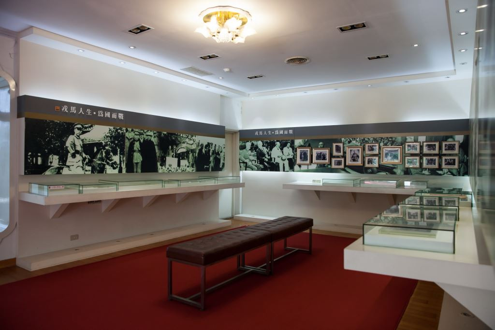
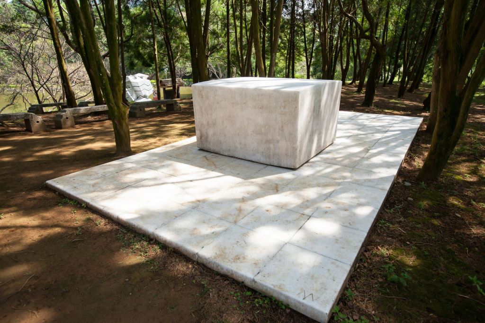

眺望溪口台地好風光 早年的角板山行館現已成為救國團青年活動中心，原本為木造建築，一場大火後重建為新的四層樓建築，仍留有歷史味道的是當年蔣公隨扈及侍衛居住的太子樓。
新的行館位於角板山對面的介壽國中旁，館內展出蔣公生前文物、舊照片、紀錄片，還有蔣公至角板山停留的生活資料。而園內十幾件來自各國的雕塑品，更增加了許多藝術氣息，還有許多茂密的梅樹，讓公園更加雅致。行館最神祕的「戰備隧道」已開放參觀，走一趟洞內可看到厚實防彈鋼門，體驗舊時戰備生活，值得細細品味。
新的行館位於角板山對面的介壽國中旁，館內展出蔣公生前文物、舊照片、紀錄片，還有蔣公至角板山停留的生活資料。而園內十幾件來自各國的雕塑品，更增加了許多藝術氣息，還有許多茂密的梅樹，讓公園更加雅致。行館最神祕的「戰備隧道」已開放參觀，走一趟洞內可看到厚實防彈鋼門，體驗舊時戰備生活，值得細細品味。
---角板山雕塑公園--- 為了增添角板山藝文氣息，與世界藝術大師接軌，桃園市政府邀請臺灣及歐美等12位國際大師，進行戶外藝術雕塑，並有雕塑公園地圖導覽，完成臺灣首座世界級的雕塑公園，由於雕塑作品十分具有創意，並融入當地景觀，帶動角板山的觀光熱度。
